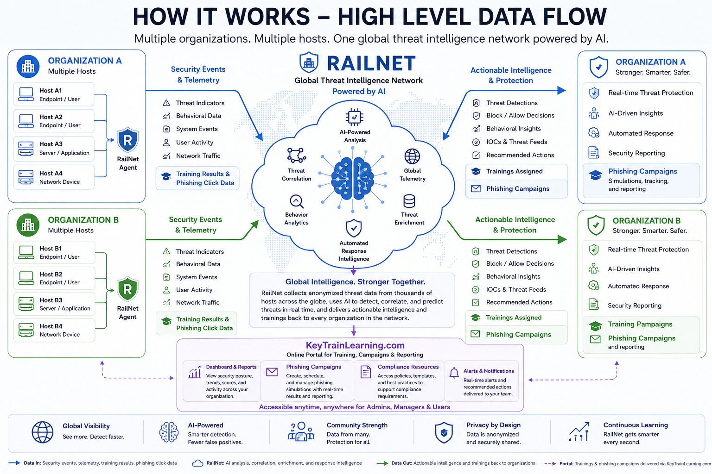

Security health
87/100
Strong posture
AI-powered cybersecurity made understandable
KeyTrain brings monitoring, reporting, global threat intelligence, and targeted training together in one clear platform—without enterprise complexity.
Security health
The challenge
Small organizations face the same evolving threats as enterprises, but usually with fewer people, fewer tools, and less time.
Traditional cybersecurity platforms are often priced and packaged for large organizations.
Complex dashboards and alerts make it hard for everyday users to know what matters.
Threats, regulations, and technology change faster than many teams can respond.
Many organizations do not have a dedicated cybersecurity professional on staff.
The reality
Reported losses have increased sharply while phishing remains one of the most frequently reported forms of cybercrime.
Reported losses
Billions of dollars, using the figures supplied in the presentation.
Statistics and projections are reproduced from the supplied KeyTrain presentation and should be verified against the latest FBI Internet Crime Report before external publication.
The problem
Organizations need enterprise-level protection, but they do not have enterprise-level budgets or specialized cybersecurity expertise.
01Security tools are too technical.
02Threats evolve faster than organizations can respond.
03Compliance expectations continue to grow.
04Training is rarely connected to the risks users actually face.
The solution
KeyTrain combines a straightforward experience with AI-driven analysis, technical indicators, and human-risk insight.
An easy-to-use Unified Threat Management platform that analyzes indicators of compromise, system hygiene, endpoint activity, network behavior, and training results.
Trend analysis helps translate raw security activity into useful context and recommended action.
A shared threat intelligence network helps participating organizations benefit from new patterns observed across the network.
Training can be recommended or assigned based on weak areas revealed by security events and organizational trends.
Trends, monthly reports, compliance reporting, and risk summaries are designed for nontechnical decision-makers.
How KeyTrain and RailNet work
Multiple hosts within each organization contribute security telemetry to a shared intelligence layer. Updated intelligence, recommendations, and reports flow back through KeyTrain.
KeyTrainLearning.com


Applicability to churches
Churches depend heavily on email, cloud services, volunteers, and lean administrative teams—making practical security and training especially important.
The source presentation describes a ransomware incident involving alleged disclosure of staff, parishioner, and student data.
The source presentation describes a ransomware claim involving financial and audit records.
The source presentation cites a business email compromise loss exceeding $700,000.
The source presentation cites a payment-instruction spoofing incident involving approximately $793,000.
Incident summaries are based on the supplied presentation. Verify names, dates, figures, and attribution before public use.
Meeting with a Methodist church
Use this section during the meeting to capture needs, priorities, and next steps without interrupting the presentation flow.
Government contracting
Maintain the legal entity, EIN, registrations, and core company records.
Create and maintain the federal contractor profile needed for eligibility.
Keep the UEI active and select NAICS codes aligned to the services offered.
Develop a concise capabilities statement with services, differentiators, and contact information.
Use appropriate accounting and timekeeping processes for the contract environment.
Build trust with agencies, primes, partners, and local contracting communities.
Milestones
This roadmap replaces the presentation placeholders with a simple, editable structure.
Refine product story, diagrams, and web demonstration.
Finalize pricing, sales materials, and initial pilot process.
Begin structured customer outreach and pilot onboarding.
200 KeyTrain users and 250 KeyTrain Learning users.
Use these numbers as editable demonstration targets until the final operating plan is approved.
Action items
Use the close to confirm what the audience understood, address concerns, and agree on a concrete follow-up.
Identify the most important technology, training, or reporting concern.
Show the KeyTrain experience that directly addresses that concern.
Schedule a technical review, pilot discussion, or stakeholder demonstration.
Keyed for defense. Trained to serve.